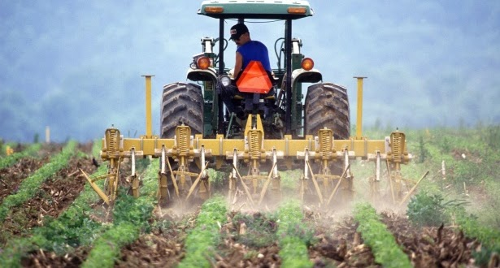
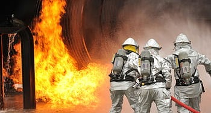
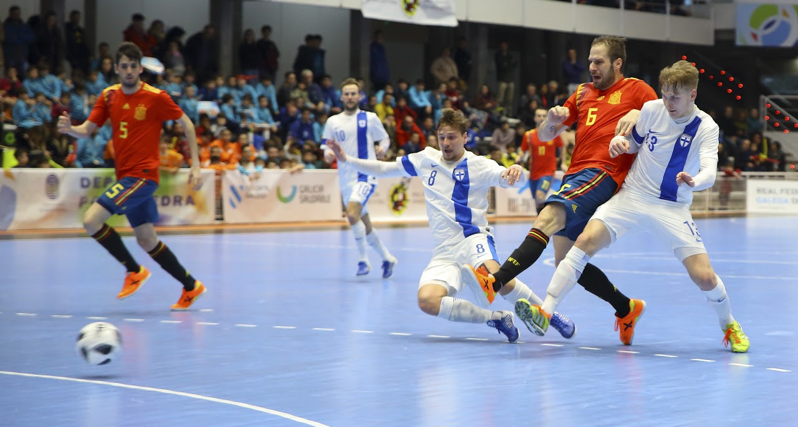
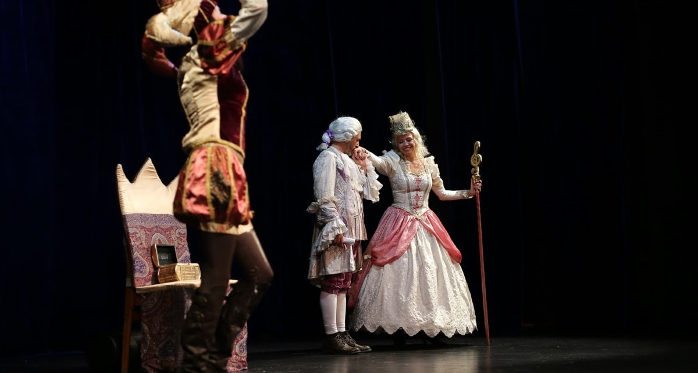
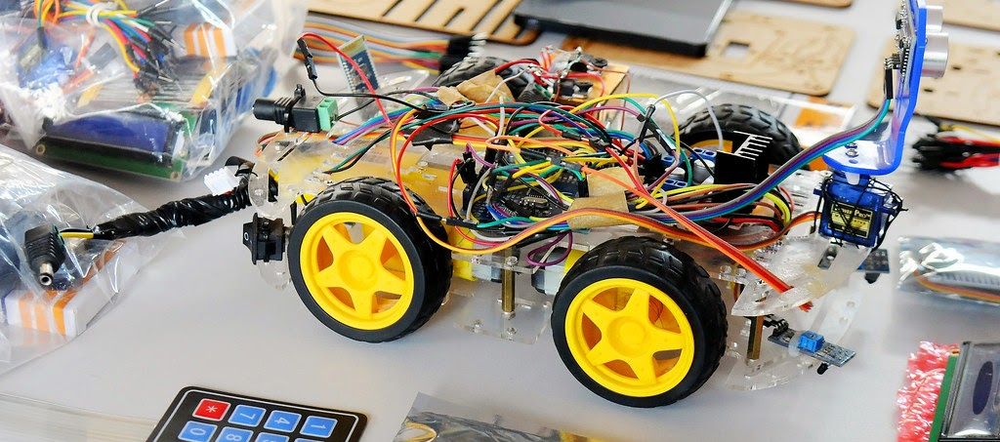
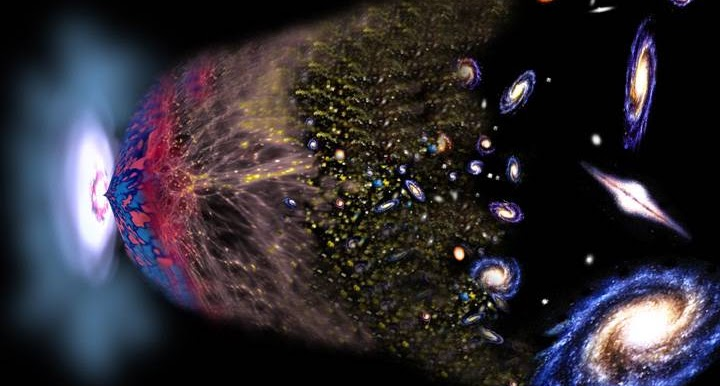

.png)
Período de inscrição: 02 a 07/02. O estudante que não fizer a inscrição dentro deste período perderá o direito de escolha da disciplina, cabendo ao coordenador de curso escolher qual diversificada o estudante vai cursar no semestre 2023/1.
Agricultura Digital
Carla Elisa Alves Bastos
A unidade diversificada Agricultura Digital tem como principal objetivo contextualizar a importância das TICs na agricultura moderna. A professora espera que o estudante, ao final da disciplina, seja capaz de:
Mais Informações
Perceber a importância da informática na agricultura e que os estudantes do Curso de Informática percebam uma via de atuação profissional em crescimento.
Estão sendo ofertadas 15 vagas para esta disciplina. Vagas destinadas a estudantes de todas as séries. Dia da oferta: Terça-feira, das 13h30 às 15h.
AEletricidade e suas Aplicações
Professor Idomeneu Gomes de Souza Filho
A unidade diversificada Eletricidade e suas aplicações tem como principal objetivo analisar fenômenos naturais e processos tecnológicoscom base nas interações e relações entre matéria e energia, para propor ações individuais e coletivas que aperfeiçoem processos produtivos, minimizem impactos socioambientais e melhorem as condições de vida em âmbito local, regional e global. O professor espera que o estudante, ao final da disciplina, seja capaz de:
Mais Informações
analisar fenômenos naturais e processos tecnológicos, com base nas interações e relações entre matéria e energia, para propor ações individuais e coletivas que aperfeiçoem processos produtivos, minimizem impactos socioambientais e melhorem as condições de vida em âmbito local, regional e global
Estão sendo ofertadas 15 vagas para esta disciplina. Vagas destinadas a estudantes da 1ª série. Dia da oferta: Terça Feira, das 13h30 às 15h.
Incêndios Florestais: para além do senso comum
Professor Allan Deyvid Pereira da Silva
A unidade diversificada Incêndios Florestais: para além do senso comum tem como principal objetivo ensinar conceitos e fenômenos básicos associados a temática “incêndios florestais”. O professor espera que o estudante, ao final da disciplina, seja capaz de:
Mais Informações
entender as possiblidades de uso do fogo como ferramenta agropecuária e conservacionista no âmbito das comunidades tradicionais com a agricultura tradicional de subsistência.
Estão sendo ofertadas 10 vagas para esta disciplina. Vagas destinadas a estudantes de todas as séries. Dia da oferta: Quinta feira, das 13h30 às 15h.
FUTSAL: Uma formação para além do esporte
Professor Marcos Junio Graciano de Souza
A unidade diversificada FUTSAL: Uma formação para além do esporte tem como principal objetivo Ensinar o futsal através de uma proposta educativa, enriquecedora e prazerosa. O professor espera , como resultado da disciplina,
Mais Informações
Desenvolver conceitos de liderança, trabalho em equipe e disciplina, formando
indivíduos mais solidários e com espírito de cooperação.
Aprimorar as habilidades técnicas do estudante, bem como seu condicionamento físico e
prédisposição a pratica da atividade física.
Contribuir com o rendimento acadêmico dos alunos envolvidos no projeto.
Estão sendo ofertadas 30 vagas para esta disciplina. Vagas destinadas a estudantes de todas as séries. Dia da oferta: Quinta feira, das 13h30 às 15h.
Cenas de Teatro
Professor Gleuter Alves Guimarães
A unidade diversificada Cenas de Teatro tem como principal objetivo desenvolver o Teatro em suas várias vertentes, oportunizando o estudante o estímulo à criação de textos e de cenas através de vivências corporais com ênfase na improvisação, interpretação, expressão e criatividade. O professor espera que o estudante, ao final da disciplina, seja capaz de:
Mais Informações
Utilizar a linguagem teatral, levando em conta seus funcionamentos, para a compreensão e produção de textos e discursos em diversos campos de atuação social.
Participar de processos de produção individual e colaborativa na linguagem teatral (corporais e verbais), levando em conta suas formas e seus funcionamentos, para produzir sentidos em diferentes contextos.
Expressar-se e atuar em processos de criação autorais individuais e coletivos através da linguagem teatral e nas intersecções entre outras linguagens, recorrendo a referências estéticas e culturais, conhecimentos de naturezas diversas (artísticos, históricos, sociais e políticos) e experiências individuais e coletivas.
Criar obras autorais, em diferentes gêneros e mídias – mediante seleção e apropriação de recursos textuais e expressivos do repertório artístico, e/ou produções derivadas (paródias, estilizações, fanfics, fanclipes etc.), como forma de dialogar crítica e/ou subjetivamente com o texto literário.
Compreender a Arte como saber cultural e estético, gerador de significados e capaz de auxiliar o indivíduo a entender o mundo e a própria identidade.
Estão sendo ofertadas 30 vagas para esta disciplina. Vagas destinadas a estudantes de todas as séries. Dia da oferta: Quinta feira, das 13h30 às 15h.
Pontos de vista, argumentação e cidadania: olhares para o local onde vivo.
Professor Daniel dos Santos Simon de Carvalho
A unidade diversificada Pontos de vista, argumentação e cidadania: olhares para o local onde vivo tem como principal objetivo desenvolver competências e habilidades de leitura e produção textual voltadas para o uso de estratégias argumentativas de forma coerente, consistente, embasada e ancorada no respeito aos direitos humanos, visando o exercício pleno e consciente do exercício da cidadania. . O professor espera que o estudante, ao final da disciplina, seja capaz de:
Mais Informações
Compreender o funcionamento das diferentes linguagens e práticas (artísticas, corporais e verbais) e mobilizar esses conhecimentos na recepção e produção de discursos nos diferentes campos de atuação social e nas diversas mídias, para ampliar as formas de participação social, o entendimento e as possibilidades de explicação e interpretação crítica da realidade e para continuar aprendendo.
Compreender os processos identitários, conflitos e relações de poder que permeiam as práticas sociais de linguagem, respeitar as diversidades, a pluralidade de ideias e posições e atuar socialmente com base em princípios e valores assentados na democracia, na igualdade e nos Direitos Humanos, exercitando a empatia, o diálogo, a resolução de conflitos e a cooperação, e combatendo preconceitos de qualquer natureza
Utilizar diferentes linguagens (artísticas, corporais e verbais) para exercer, com autonomia e colaboração, protagonismo e autoria na vida pessoal e coletiva, de forma crítica, criativa, ética e solidária, defendendo pontos de vista que respeitem o outro e promovam os Direitos Humanos, a consciência socioambiental e o consumo responsável, em âmbito local, regional e global.
Estão sendo ofertadas 20 vagas destinadas a estudantes das 3° série. Dia da oferta: Quinta feira, das 13h30 às 15h.
Robotiz@: iniciação em robótica
Professor Vitor Mendes Vilas Boass
A unidade diversificada Robotiz@: iniciação em robótica tem como principal objetivo desenvolver esenvolver e consolidar o pensamento computacional e o raciocínio lógico dos estudantes a partir da programação e da robótica educacional. O professor espera que o estudante, ao final da disciplina, seja capaz de:
Mais Informações
compreender as tecnologias digitais de informação e comunicação, em especial a programação e a robótica, como ferramentas auxiliadoras na vida em sociedade, cujo uso deve se dar de forma criativa, reflexiva e ética nas diversas práticas sociais. Espera-se ainda que estejam aptos a interpretar situações de forma lógica bem como investigar e resolver problemas interdisciplinares valendo-se dos conceitos e técnicas apresentados ao longo do projeto. Por fim, espera-se que os estudantes estejam com a expectativa acadêmica renovada e motivados a aprofundar seus estudos com comprometimento e afinco.
Estão sendo ofertadas 15 vagas para esta disciplina. Vagas destinadas a estudantes da 1ª e 2ª séries de Informática. Dia da oferta: Quinta feira, das 13h30 às 15h.
Ficção ou ciência: desvendando séries e filmes
Professor Josimar Morais de Souza

A unidade diversificada Ficção ou ciência: desvendando séries e filmes tem como principal
objetivo levar o estudante a conhecer e discutir as funções/papéis atribuídos aos meios de
comunicação nas sociedades democráticas atuais, particularmente no Brasil; relacionar tais
funções e papéis àqueles atribuídos ao ensino das ciências e à divulgação científica, em uma
perspectiva de complementaridade entre essas práticas; compreender as condições necessárias para
o cumprimento efetivo das funções/papéis atribuídos aos meios de comunicação, no contexto
específico da promoção da cultura científica; desenvolver postura crítica (abrangendo
conhecimentos, habilidades, atitudes e valores) em relação às informações de Ciência, Tecnologia
e Inovação veiculadas na mídia, em sua relação com outras fontes de informação O professor
espera que o estudante, ao final da disciplina, seja capaz de:
sensibilizar-se sobre a importância da Ciência para a sociedade, bem como ter as ferramentas
conceituais e práticas necessárias para adquirir e interpretar textos e vídeos de divulgação
científica. Mais Informações
Estão sendo ofertadas 20 vagas para esta disciplina. Vagas destinadas a estudantes de todas as séries. Dia da oferta: Quinta feira, das 13h30 às 15h.